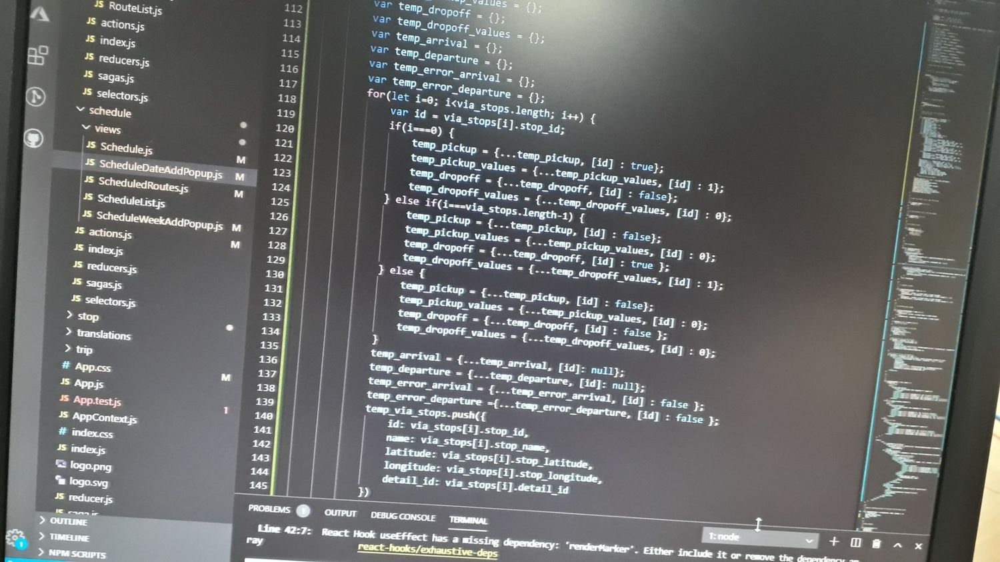
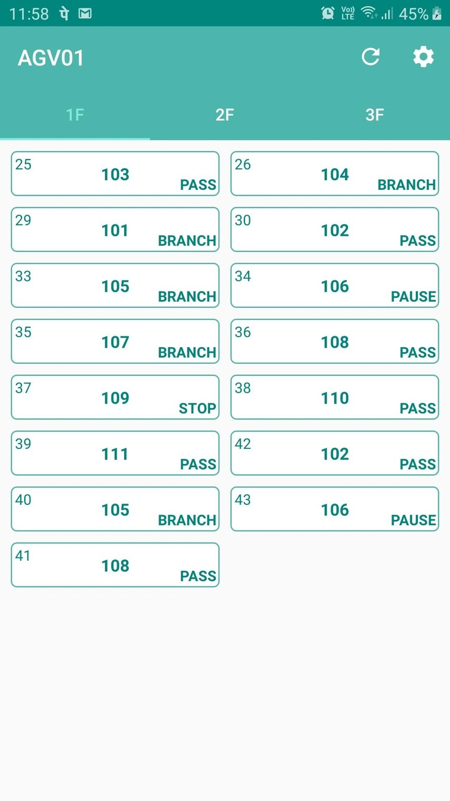
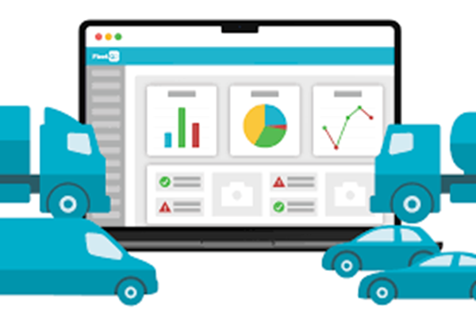
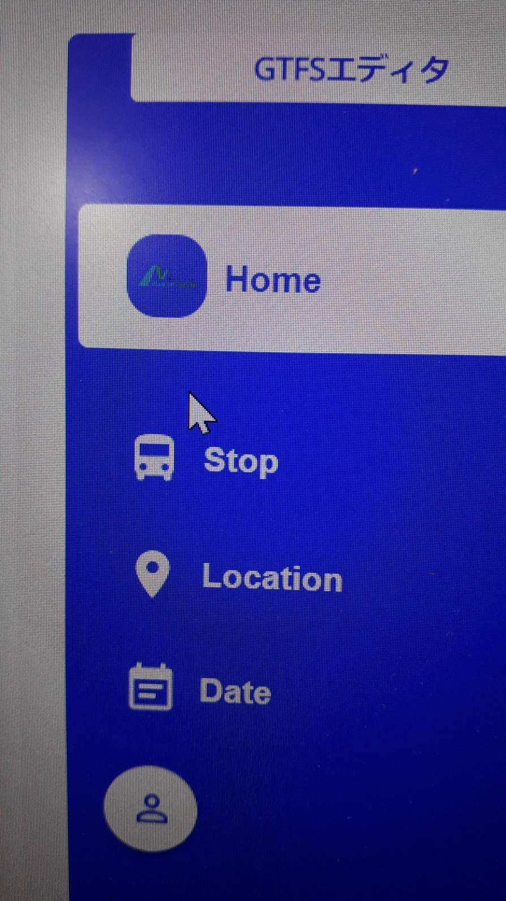
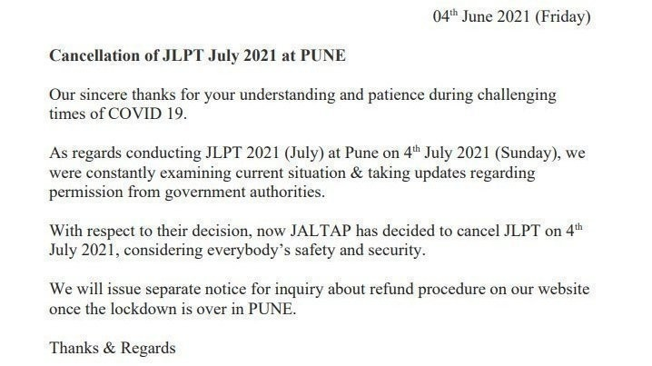
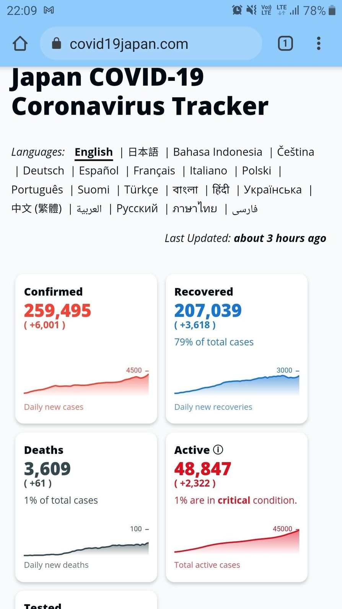

Year Four: New Challenges and Pandemic Pauses

Ah, year four. The year when everything that wasn't nailed down to reality went remote, including me. After three years of on-the-ground adventures in Japan, 2020 kicked in, and suddenly, I found myself back in India—staring at a laptop screen for hours on end, wondering if my webcam was capturing my good side. The pandemic had hit hard, and like the rest of the world, I adapted to working from home, complete with dodgy Wi-Fi and too many cups of coffee.
Patience is not simply the ability to wait - it's how we behave while we're waiting.
Chapter 1: AGV Robots and Microsoft Teams — A Strange Mix
Remote work is all fun and games until you're trying to troubleshoot an AGV robot from 6,000 kilometers away. That's right, my trusty robot army was still in Japan, and I was stuck with video calls and emails to control them. Add in WebRTC for real-time communication, and I was basically directing a futuristic robot ballet—except the dancers had no rhythm and sometimes forgot how to move. You know, the usual.
Chapter 2: Building a Telematics SaaS Platform—Fleet Management From My Couch
If you think managing robots remotely was challenging, imagine leading the development of a cloud-based SaaS telematics platform that pulled real-time data from IoT devices to manage fleets—all from the comfort of my couch. Yeah, I'm basically the “work from home” version of Iron Man at this point.
We integrated GPS, fuel sensors, and vehicle diagnostics, creating a one-stop platform for fleet management. From India, I was guiding fleets in Japan, watching live data pour in while sitting in my living room with a cup of chai. The best part? I could do all of this without wearing pants. (Shhh, don't tell the boss.)
Chapter 3: The GTFS Editor—Public Transit at My Fingertips (Virtually)
In between robot wrangling and fleet management, I worked on a react-based web app to manage public transportation schedules using the General Transit Feed Specification (GTFS). If that sounds like a mouthful, it's because it was. Basically, I built an app that helps cities manage bus and train schedules, ensuring the right buses show up at the right places at the right times—without creating chaos on the streets.
Sure, I was managing this transit data from my house in India, but it felt like I was indirectly controlling Japan's public transportation system. No big deal. It was like being a digital conductor, only the trains were pixels on a screen. Oh, and I made sure the app handled geographic data too—because if you're going to manage transportation, you better know where the buses are going.and I would unwind at a local izakaya, bonding over beer, grilled food, and terrible puns about robots taking over our jobs. It was a much-needed break from the constant focus on code, wiring, and robot movements.
Chapter 4: The Year Without a JLPT Exam—Thanks, COVID
By the time JLPT exam season rolled around, I was ready. JLPT N3? Piece of cake. I'd studied for months, and I was confident this was going to be my year.
Then, the pandemic had other plans. JLPT canceled. That's right, after all the kanji cramming and hiragana headaches, the exam was called off due to COVID-19. It felt like studying for a marathon, only to be told the race had been postponed—indefinitely. So much for showing off my improved language skills. Instead, I got to show off my ability to refresh the Japan travel updates page 100 times a day, waiting for news on when borders might reopen.
Chapter 5: The Waiting Game—When Will Japan Reopen?
Speaking of borders, Japan's were closed tighter than a new jar of pickles. Every day, I checked for updates, hoping to see some good news about foreign workers being allowed back in. But no. Japan had shut its doors, and I was left waiting—and waiting.
It became a daily routine: check the news, sigh, and then go back to remote work. I missed my girlfriend(She was in Japan), the streets of Oita, the izakayas, the karaage that come in plastic takeout containers. My colleagues and I joked that I'd probably be fluent in Japanese by the time I finally got back, but at this point, I was just hoping I'd get back at all.
Chapter 6: Wedding Bells on Hold—The Plot Twist
Speaking of things being canceled—my wedding! That's right. I had a grand plan to get married in India, but thanks to border restrictions, those plans came to a screeching halt. I had everything lined up: the venue, the paperwork, and even the pre-wedding nervousness. But with Japan's borders sealed tighter than a drum, there was no way to make it happen.
Instead of a romantic ceremony in India, we had to postpone it indefinitely. So, I swapped wedding planning for wedding waiting, keeping my fingers crossed that one day the borders (and wedding venues) would reopen. Until then, my fiancée and I mastered the art of long-distance relationship-ing via video calls.
Now, with borders still closed and wedding plans on pause, I'm waiting for life to reopen, ready to jump back into the adventure. Until then, I'll just keep refreshing those travel updates and practicing my kanji.